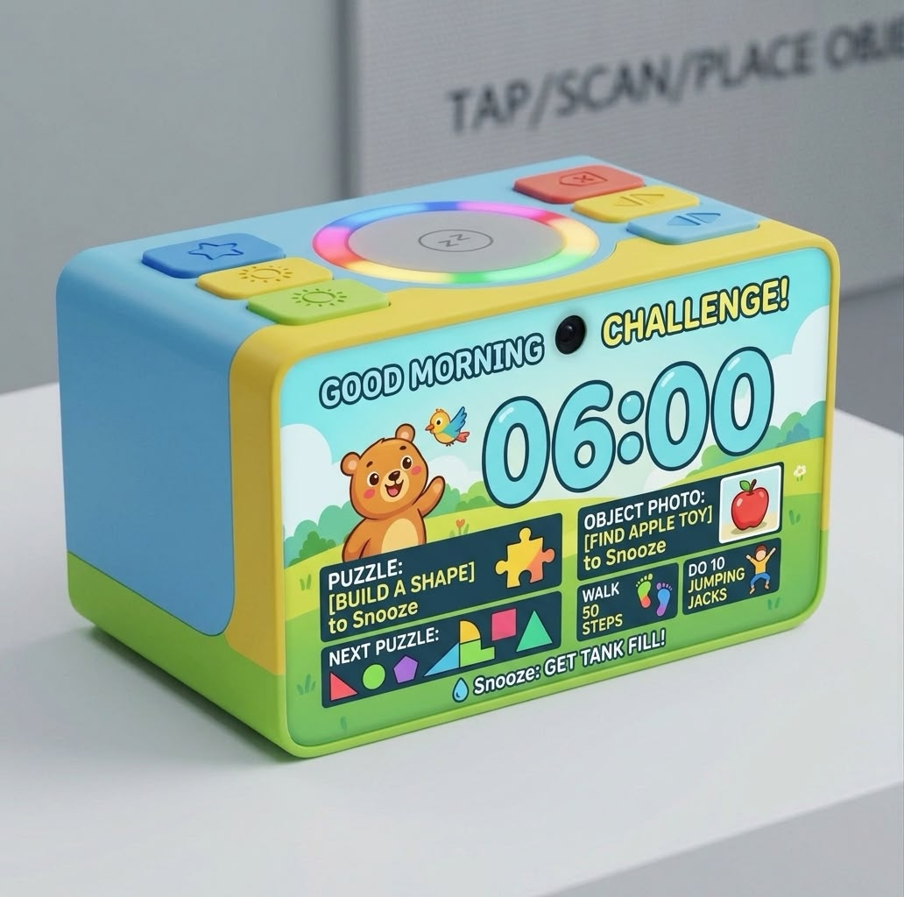
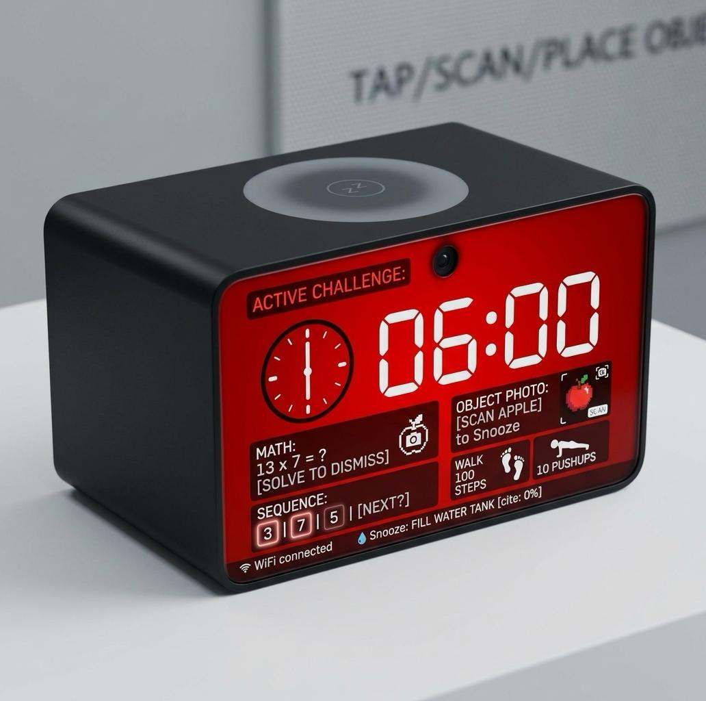
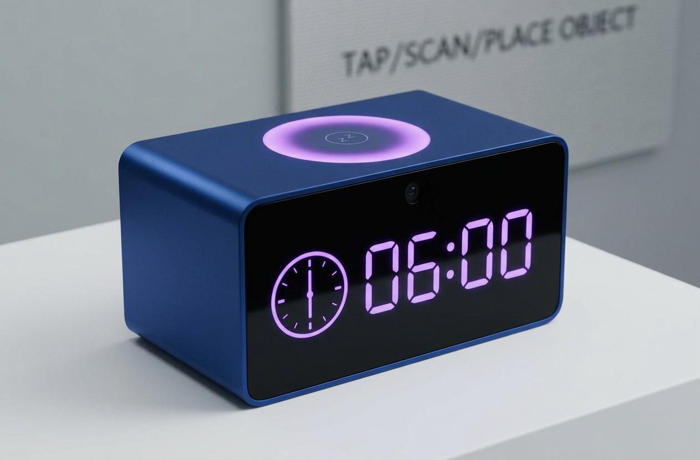
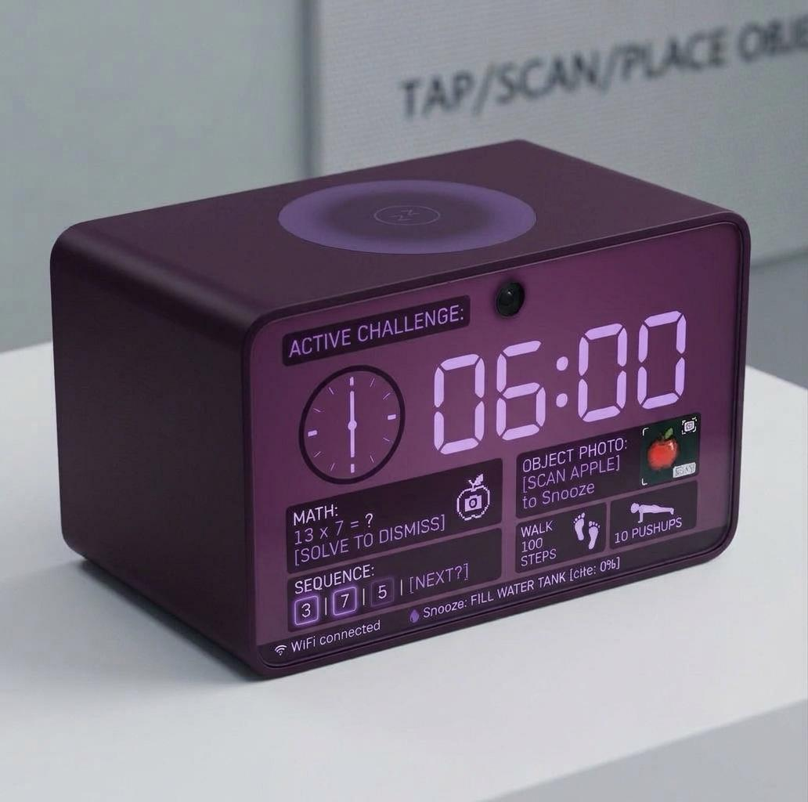

Product Features

Riddles, Puzzles & Real Challenges
Every snooze triggers a new riddle, shape puzzle, or geography quiz. WakeQuake won't go quiet until your brain is actually switched on.

AI That Actually Checks
Solve a math equation, repeat a number sequence, or scan a specific object with the built-in camera — WakeQuake verifies you're really awake before it stops.

Designed to Wake You Gently First
A soft rotating light ring builds gradually before the alarm sounds, while the anodized aluminum body looks as good on your nightstand as it sounds in the morning.

4 Finishes, One Mission
From the playful Classic to the deep-toned Deluxe, every WakeQuake finish shares the same mission: get you out of bed, every single time.